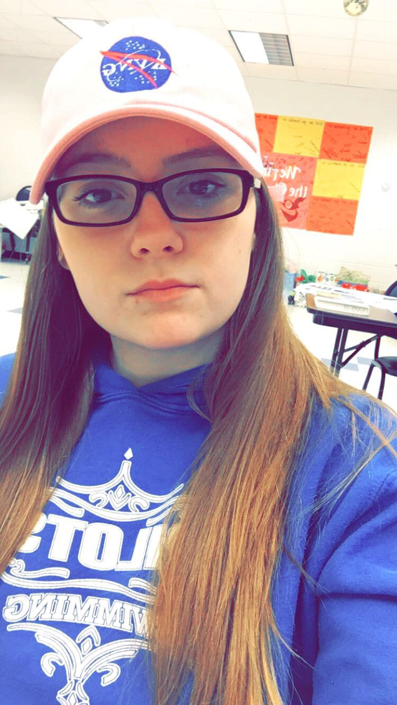

Hi my name is Margau Anne Hughes, I am 17 years old, I am a twin, and I go to Norview High school: Class of 2018!.
Born on December 8th, 1999, with twin sister Amber Hughes in Virginia Beach, VA. Moved 4 times but has never left Norfolk, VA. From the ages of 4 to 10 Margau and her family lived on a boat in Cobbs marina off of shore drive.Because of the families love of water Margau and her sister have swam competitively since they were 9.Margau Hughes has attended many schools throughout Norfolk but currently attends Norview High School as a Junior. She has many she loves very dearly and has aspirations of becoming an OB/GYN.
Color: Maroon
Food: sushi / cheese burger
Movie: Dirty dancing
Book: To kill a mocking bird
Snack: gummies
Fast food: Wendy's
Makeup product: highlighter
